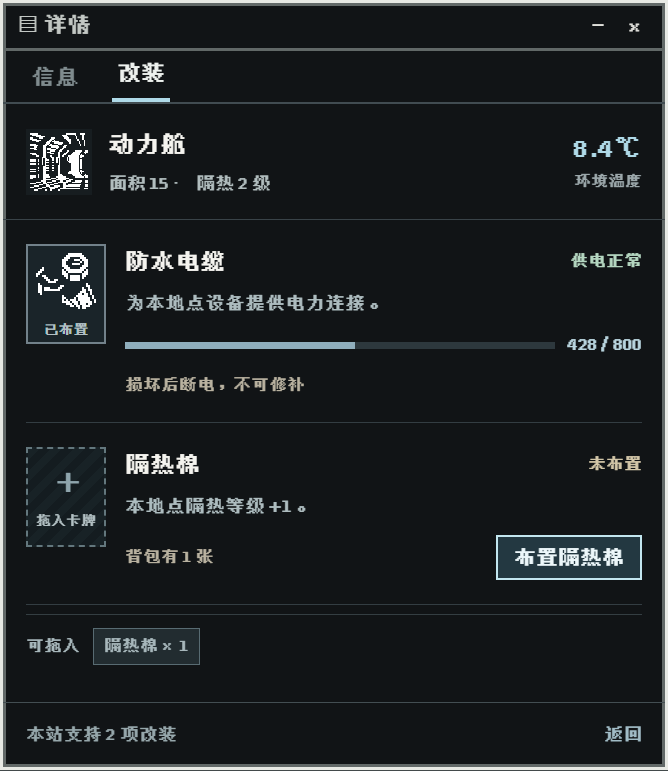
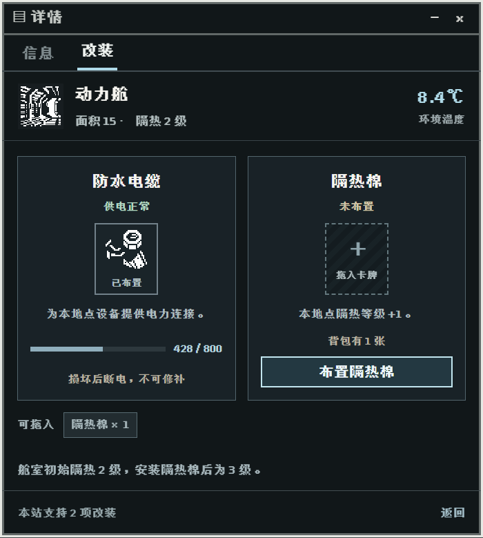
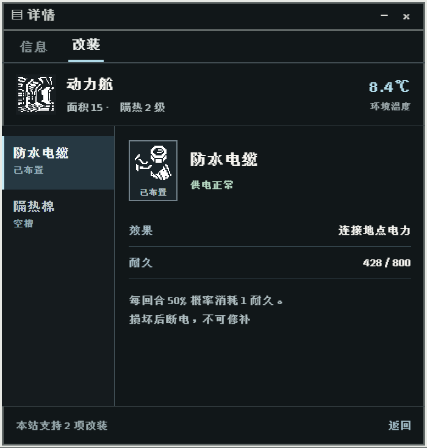
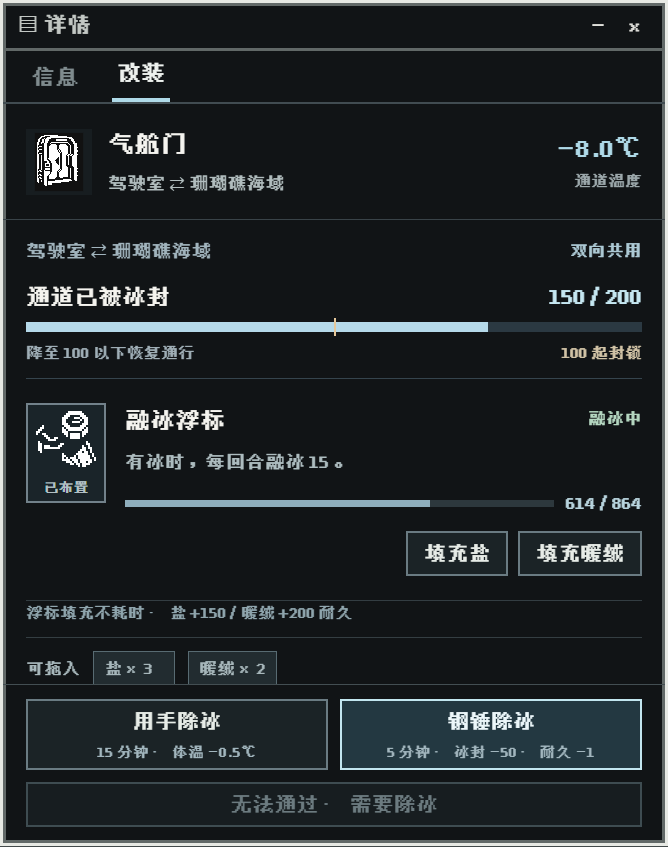
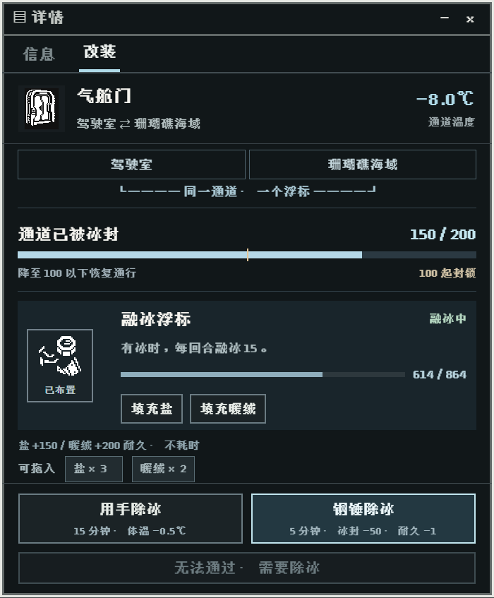
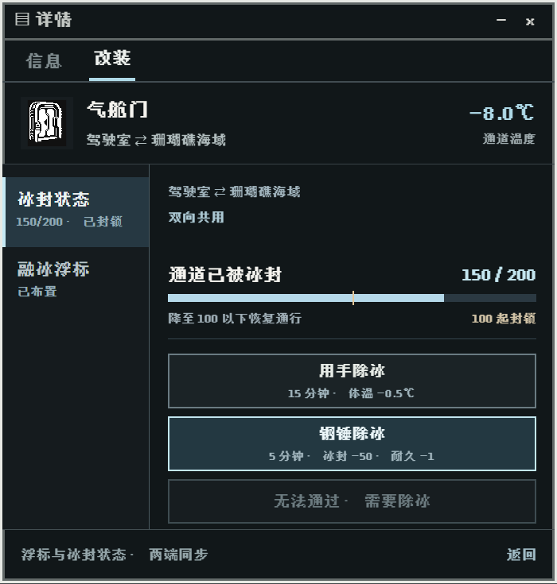
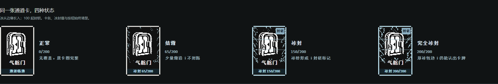
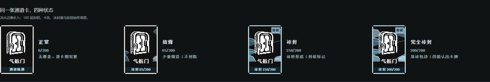
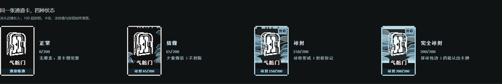
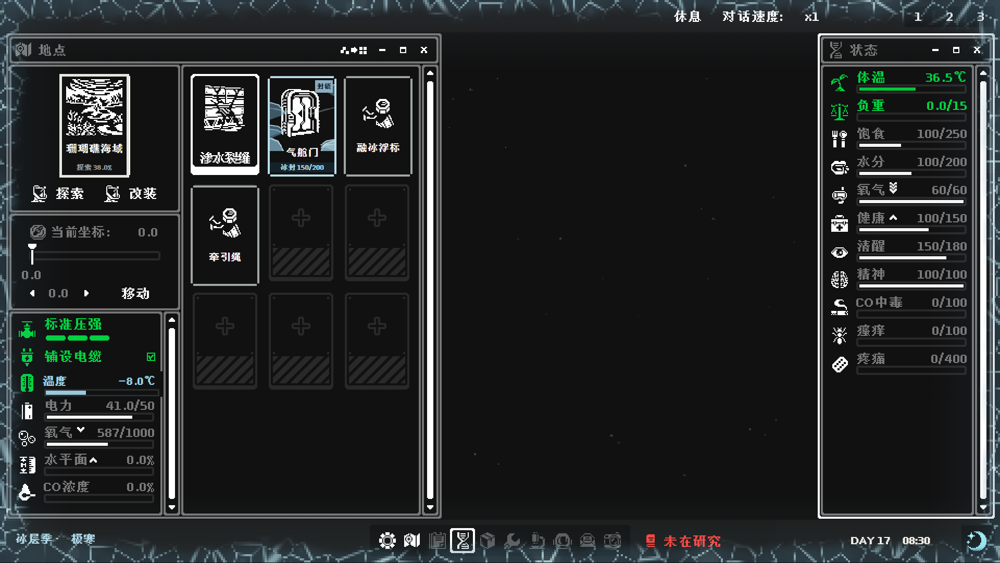

A / 紧凑维护单
两项同时读完；延续目前的操作习惯。

同一套字体与卡图，不同的信息组织和操作方式。
两项同时读完；延续目前的操作习惯。

强调拖入卡槽；更直观地展示设备。

逐项展开；长说明与后续扩展更从容。

浮标与除冰操作一起展示。

两端只共享一张卡，不分别安装。

先选冰封状态，或切换到浮标维护。





像素霜冻 shader、边缘冷色渐变、缓慢漂浮冰晶；中央文字和交互区保持清晰。动态效果请在预览页查看。
以上是原实机画面背景上的浏览器设计稿，尚未接入 Unity。数值与卡图仅供比较布局；新卡沿用废金属占位图。